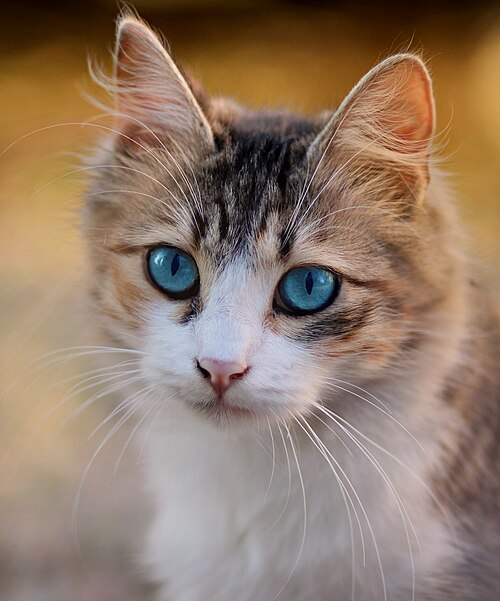

Information that I found interesting!
- Cats spend about 70% of their lives sleeping (I wish I could too)
- Each one of their ears has 32 muscles, that enables them to turn 180 degrees!
- They use their Whiskers to measure if spaces are wide enough to fit through.
- Many cats get the zoomies after using the litter box (so cuteeeeee)
- Their style of walking is known as the digitigrade style, due to them walking on their toes.
- They have a special reflective layer behind their retinas known as the tapetum lucidum that boosts night vision
- Whiskers are not only found on their cheeks but on the backs of their front legs
- Female cats tend to favor their right paw, while males often favor their left paw.
- The world's oldest recorded cat, named Crème Puff, lived to be 38 years and 3 days old.
